We ablate the two mechanisms that stabilize past knowledge during class-incremental learning: pseudo-concept generation (geometry-aware synthetic concepts that separate old classes from new ones in concept space) and concept regularization (distillation that limits drift of units tied to earlier concepts).
Table 5 reports average incremental accuracy on CIFAR-100 and TinyImageNet for all four on/off combinations. Removing pseudo-concepts causes weights for previous classes to collapse toward zero, which wipes their accuracy and dominates the aggregate metric. Turning on concept regularization alone does not fix that collapse: regularization preserves bottleneck semantics but does not stop the classifier from ignoring old classes. Pseudo- concepts restore separation between old and new phases; adding regularization on top yields the best numbers, matching the full CI-CBM model.
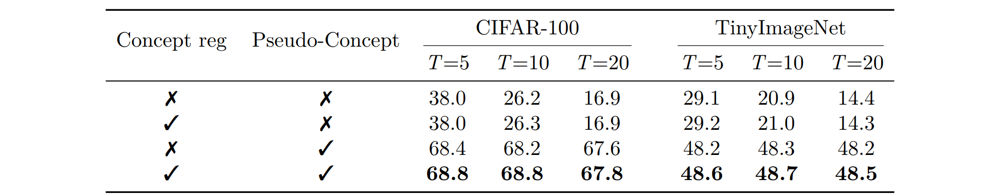
CI-CBM builds each phase’s concept vocabulary from language: we compare using GPT-3 prompts (default) against harvesting concepts from ConceptNet, a lexical knowledge graph rather than an LM. ConceptNet is cheaper and works reasonably on CIFAR-100 and TinyImageNet but lags GPT-3 by about two accuracy points. On CUB, ConceptNet-derived concepts fail almost entirely, whereas GPT-3 produces attributes that track fine-grained bird parts. This supports using a language model when concepts must capture subtle visual semantics.
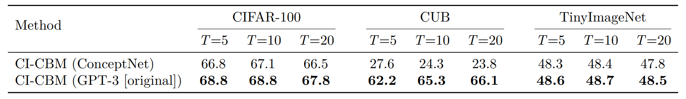
Following sparse linear bottleneck ideas (e.g., SAGA-style sparse predictors), CI-CBM encourages each class to activate only a small subset of concepts. Setting the sparsity coefficient λ to zero yields a dense final layer. As Table A.5 shows, dense training is slightly weaker than the sparse default on both benchmarks: a dense layer can overweight many pseudo-concept dimensions at once, whereas sparsity forces each class to commit to a compact concept signature and improves robustness across phases. Reported sparsity percentages confirm only a few percent of weights are active per configuration.
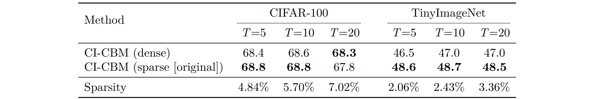
Figure A.1 — Interpretability without sparsity
Beyond accuracy, we repeat the Sturgeon concept-attribution visualization from the main paper while training the predictor without sparsity. The model still classifies correctly, but contributions spread across many concepts: no small set dominates, so explanations become long-winded and harder to audit.
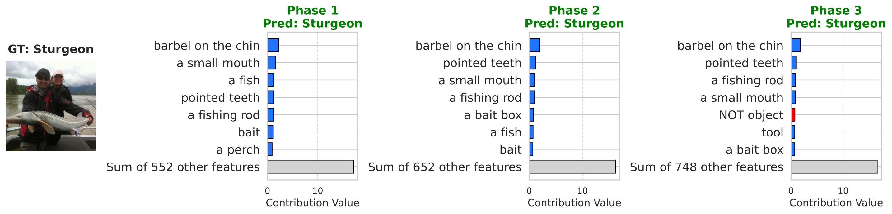
Real supervision may omit concepts. We randomly mask fractions of the vocabulary during training and record average incremental accuracy at 100%, 75%, 50%, and 25% concept availability (Table A.6). Accuracy drops slowly—under 3.5 points on CIFAR-100 and about two points on TinyImageNet even at 25%—showing that CI-CBM tolerates incomplete concept lists.
Qualitatively, we revisit Tree Swallow weights on CUB and Sturgeon attributions on ImageNet-Subset under 50% masking. When iconic attributes disappear from the pool, the network substitutes visually related concepts yet preserves coherent positive/negative structure across phases (Figures A.2–A.3).
Figure A.2 — Tree Swallow weights with 50% concepts
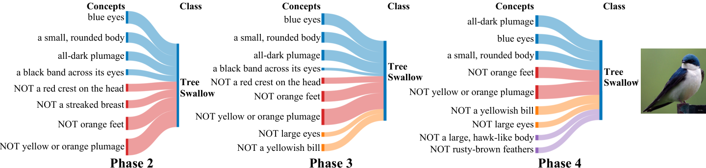
Figure A.3 — Sturgeon reasoning with 50% concepts
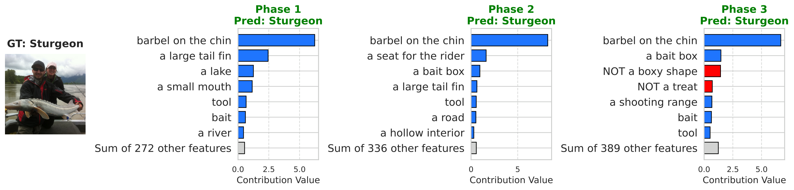
The supervision matrix P aligns images with text concepts via a vision–language model; misalignment or estimator noise is unavoidable. We inject Gaussian noise into P at several SNRs during training. Table A.7 shows accuracy barely moves between clean activations and strongly corrupted ones, signalling that optimization does not hinge on perfectly crisp concept targets.
CI-CBM learns a shared linear predictor with pseudo-features mimicking old-class statistics in backbone space. We compare against two variants: local class discrimination, which expands the predictor but freezes weights for earlier classes (good when each phase introduces many classes, brittle when T is large because phases overlap); and concept-space prototype generation, which translates class centroids directly in concept coordinates. Prototype translation fails once the bottleneck expands and drifts—old centroids no longer live in the updated basis. Table A.8 shows both baselines decay sharply as T grows, whereas CI-CBM stays near its default accuracy.
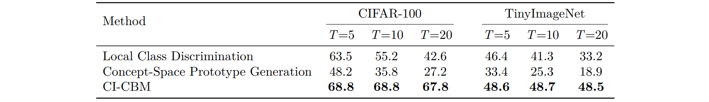
Each phase could append every GPT-generated string, but duplicates inflate the bottleneck and fragment attributions across synonymous units. CI-CBM filters so only genuinely new concepts enter the vocabulary. Compared with naïvely cumulative expansion, unique expansion roughly halves the number of active concepts by the final phase for T = 20, shrinking both matrices and making explanations shorter and more stable.
Figure A.4 — Concepts per seen class (unique vs cumulative)
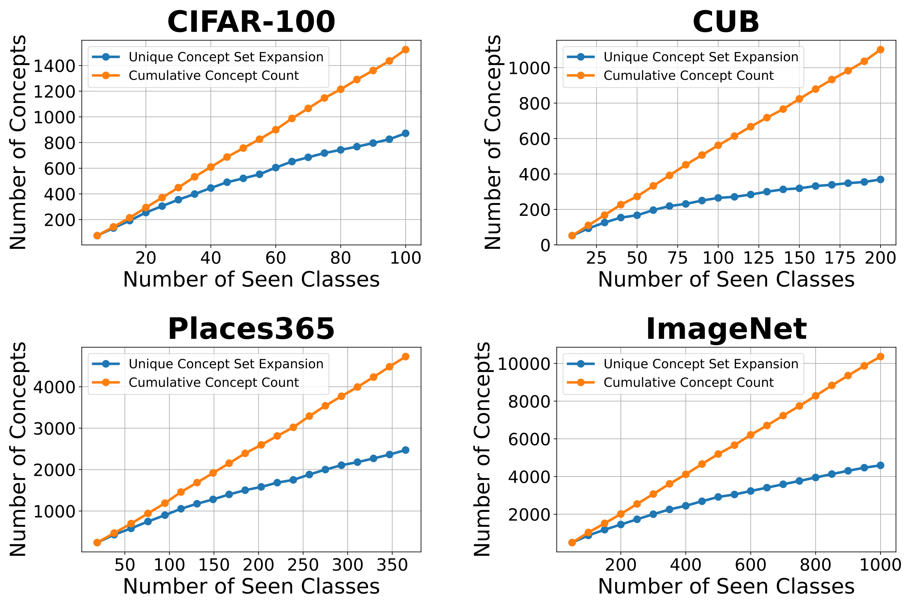
Distillation weight β trades off fidelity to previous concept activations versus fitting new data (same protocols as Experiments I–II depending on dataset). Removing distillation (β = 0) clearly hurts; large β overdamps adaptation. Performance peaks near β = 1, which is why all main experiments adopt that default (Table A.10).
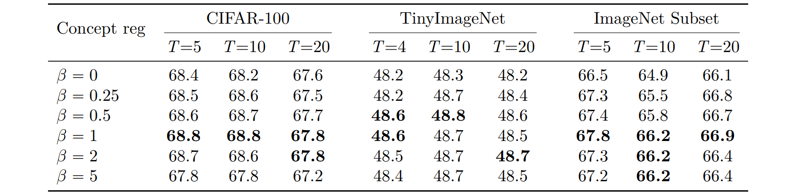
Accuracy alone does not guarantee interpretable units. We therefore score how well each bottleneck neuron tracks its assigned concept text after continual training.
Enabling distillation-based concept regularization consistently raises both metrics across datasets and phase granularities (Table A.11), indicating that the regularizer fights representation drift without sacrificing the semantics attached to each bottleneck dimension.
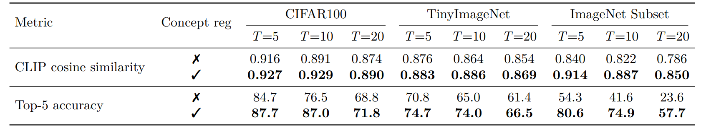
Matrix P can be built with any aligned VLM. Keeping training identical to Experiment I, we swap CLIP for SigLIP. Table A.12 shows SigLIP yields higher average incremental accuracy on CIFAR-100, CUB, and TinyImageNet, suggesting sharper image–text alignment propagates into better pseudo-supervision.
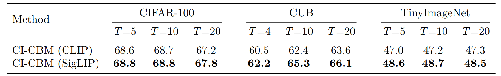
Table A.13 repeats the fidelity evaluation from the previous section: SigLIP-tuned models achieve higher CLIP cosine similarity and top-5 concept accuracy, so bottleneck units stay better anchored to language even after many incremental phases.
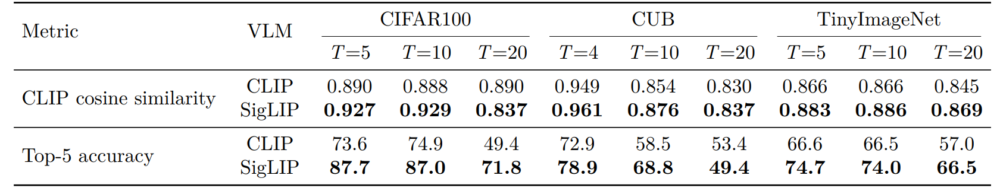
Pseudo-features are meant to mimic true backbone embeddings of forgotten classes. To test whether they behave like real data under a simple decision rule, we freeze features, build cosine prototypes per class from training samples, and compare four phase-by-phase matrices with entries (i, j): accuracy on classes introduced in phase j after training through phase i. The panels are (1) real training features under cosine prototypes, (2) pseudo-features under the same prototypes, (3) held-out real validation features, and (4) test accuracy of the full CI-CBM model (not the prototype classifier). We repeat for ImageNet-pretrained ResNet-18 (top row, T = 10 phases) and for a backbone trained only on first-phase data (bottom row, T = 11 phases), with the fourth column contrasting ImageNet-pretrained vs FeTrIL-style backbone heatmaps.
Pseudo-feature matrices closely track their training and validation counterparts: nearest-centroid confusion patterns stay aligned, which supports using pseudo samples as surrogates. Gaps still appear for classes introduced late when the backbone never saw them during pretraining—those limits show up for real embeddings too, so they reflect representation quality rather than a flaw exclusive to pseudo-features. Overall CI-CBM improves end-to-end test accuracy beyond what raw cosine prototypes achieve, especially when the backbone is weak.
Row 1 — ImageNet-pretrained ResNet-18 (T = 10)
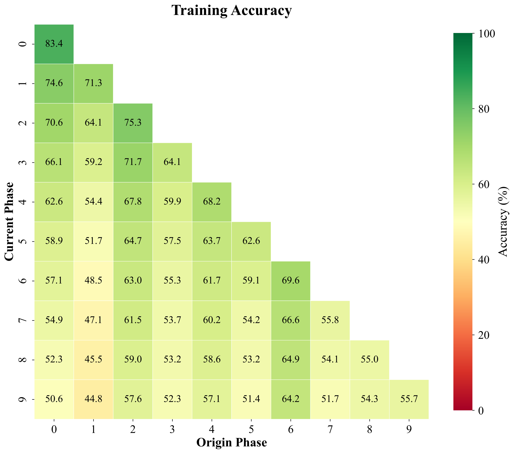
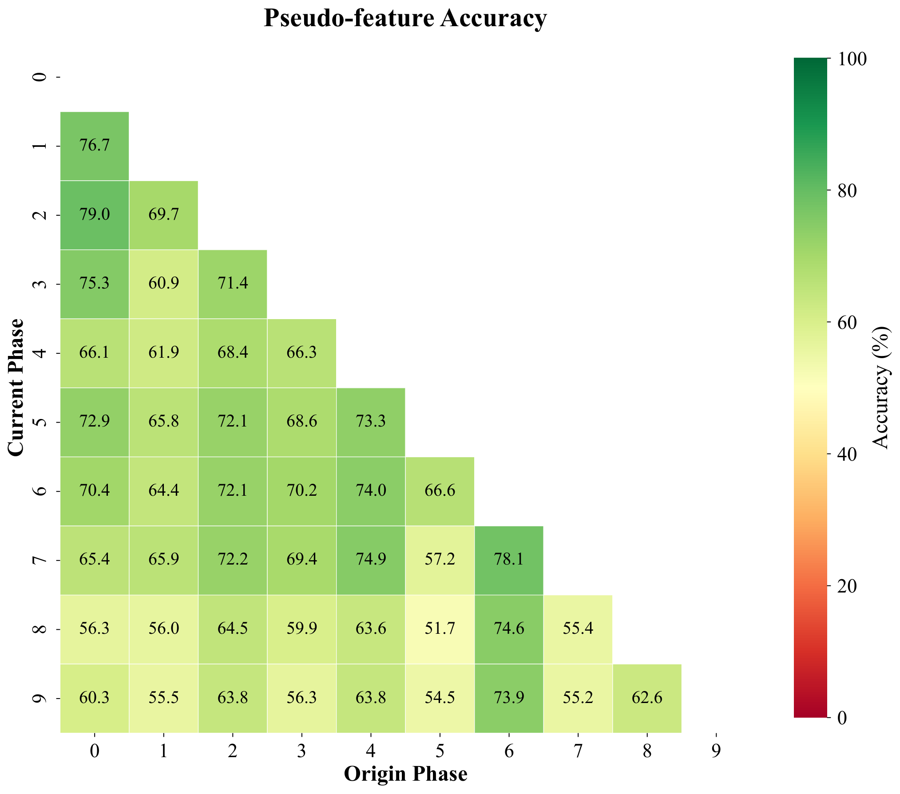
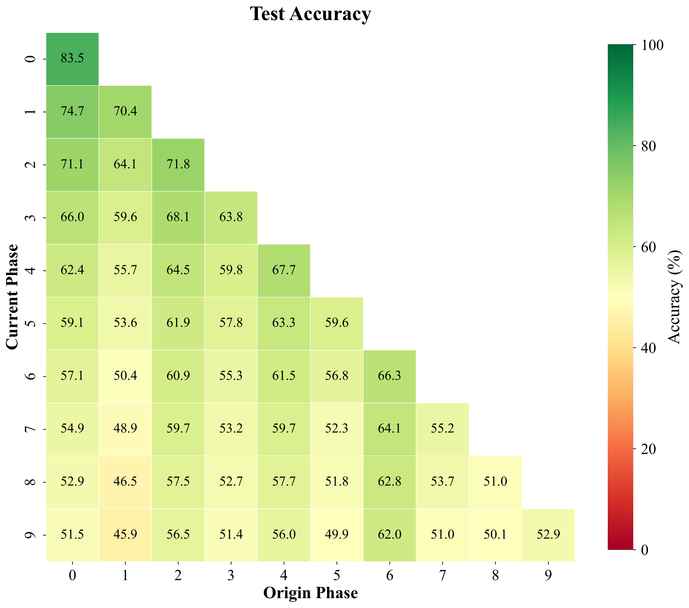
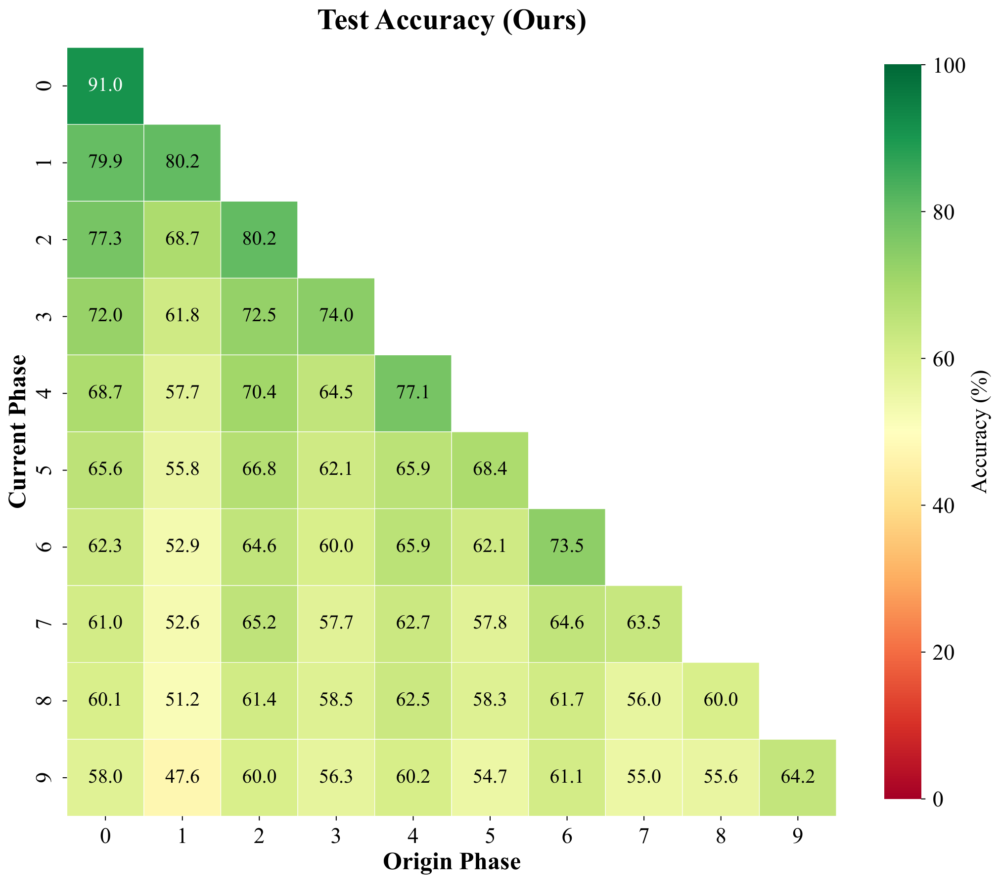
Row 2 — ResNet-18 trained on first-phase data only (T = 11)
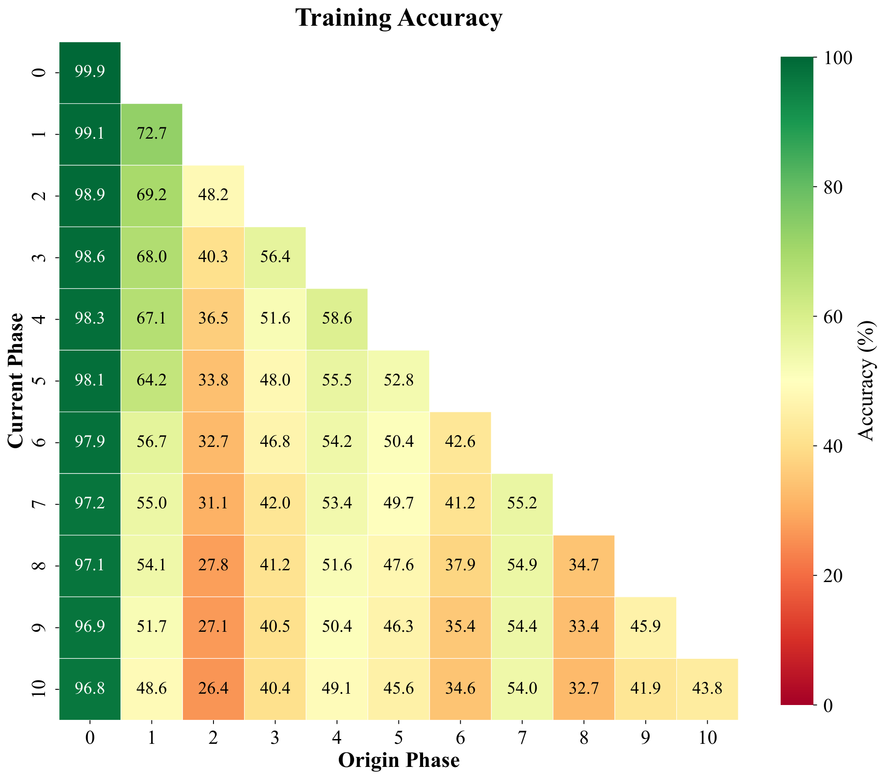
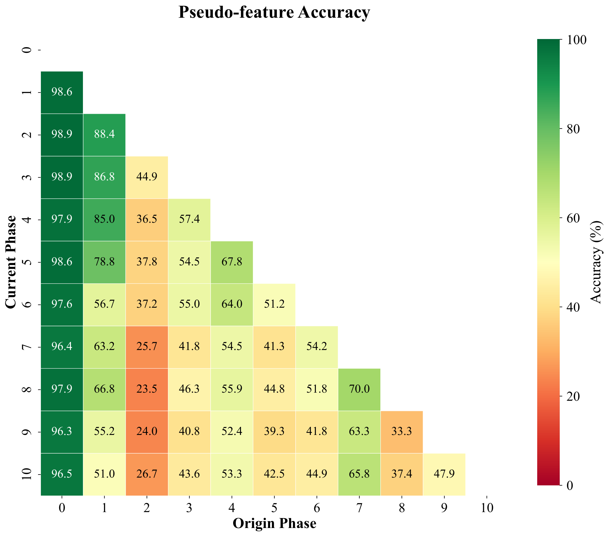
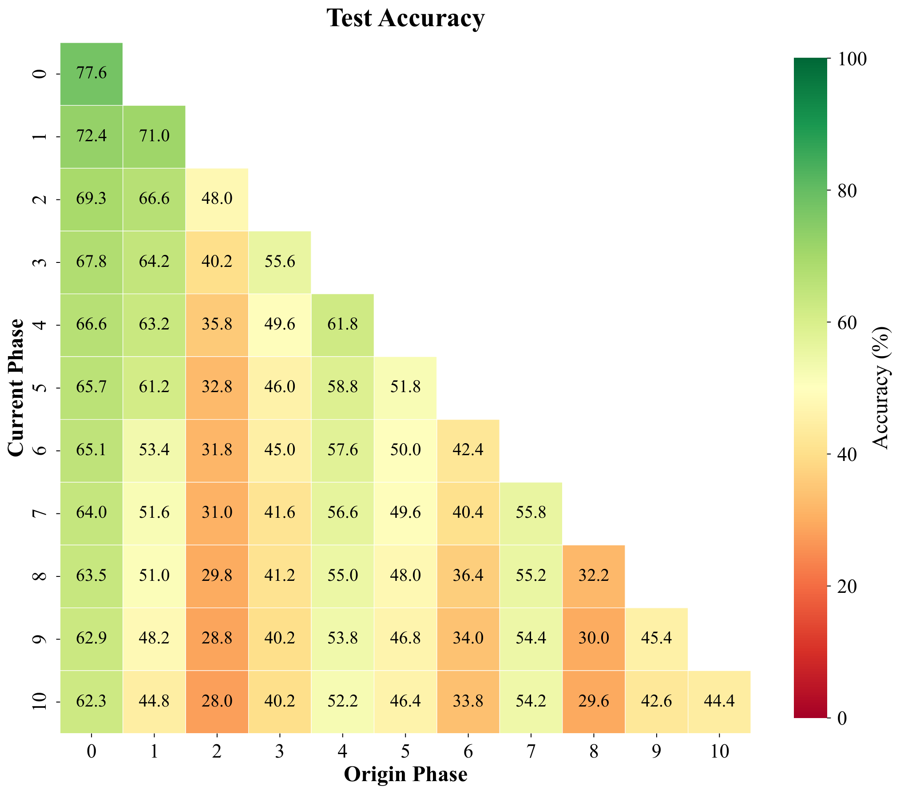
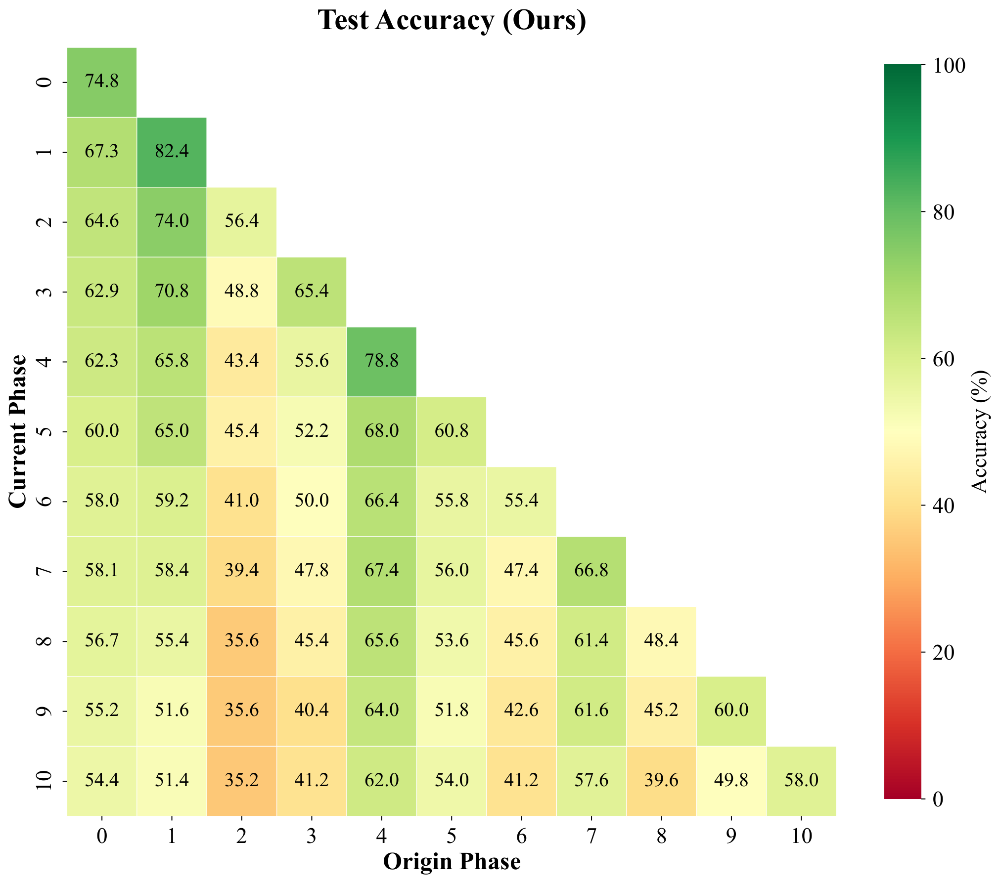